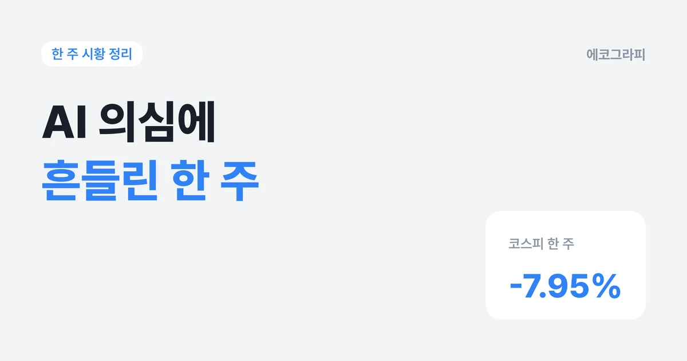
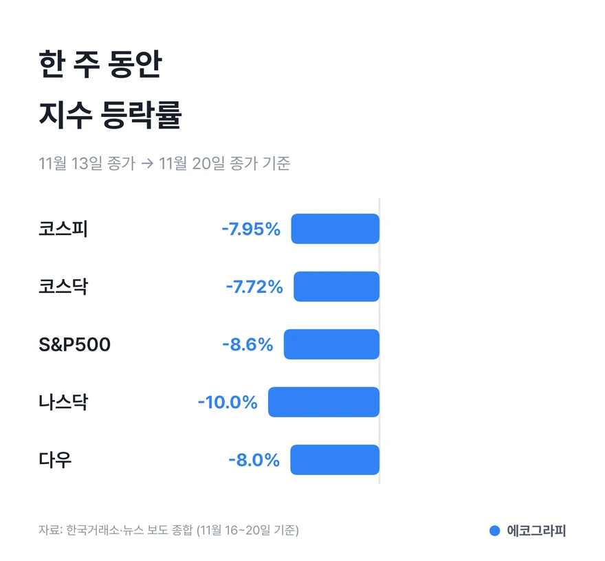
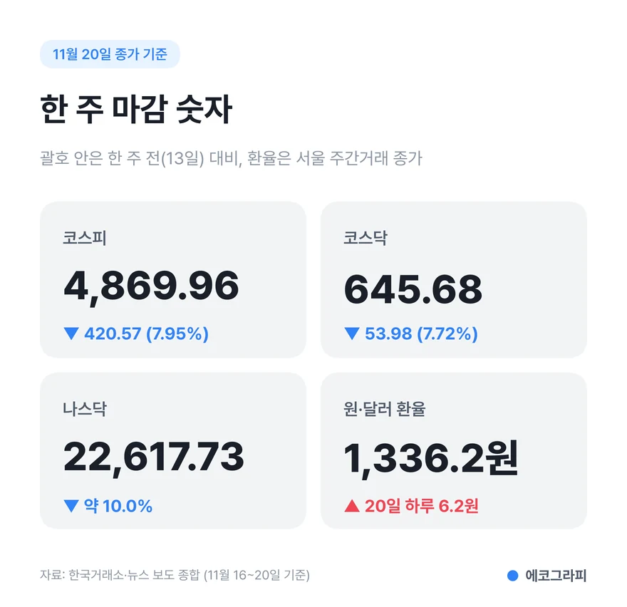
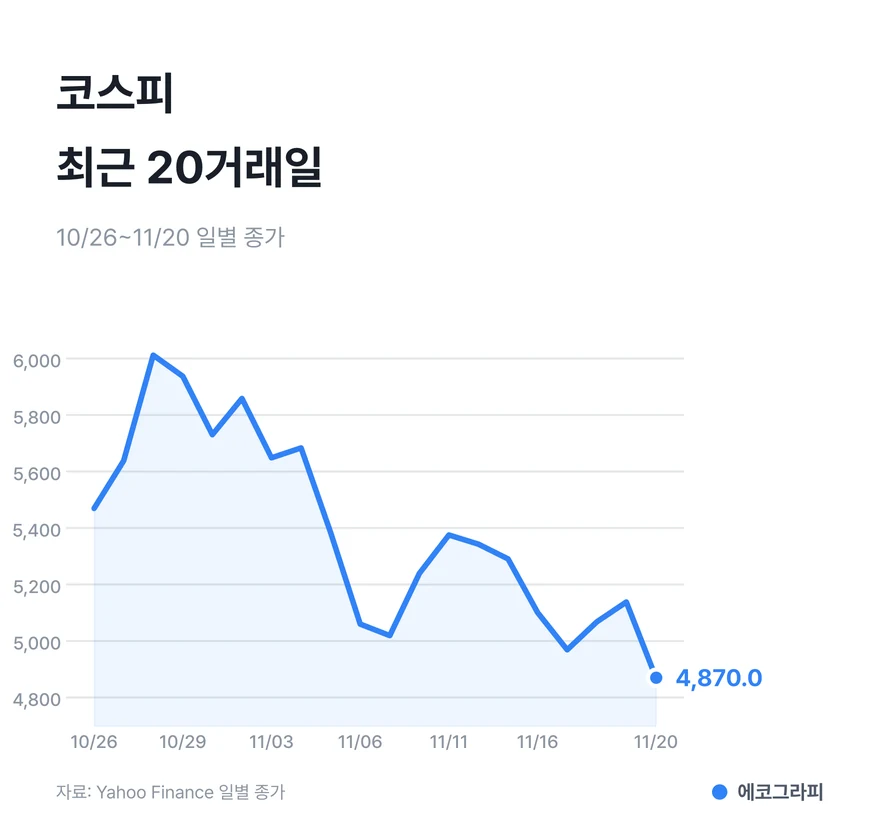
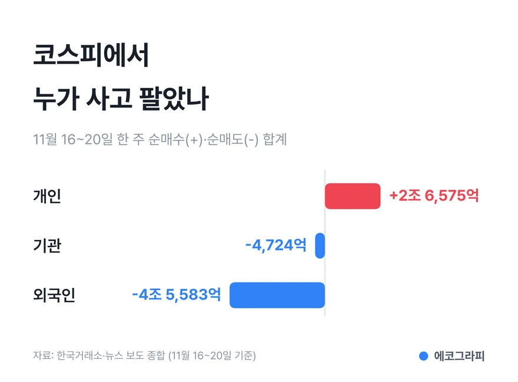
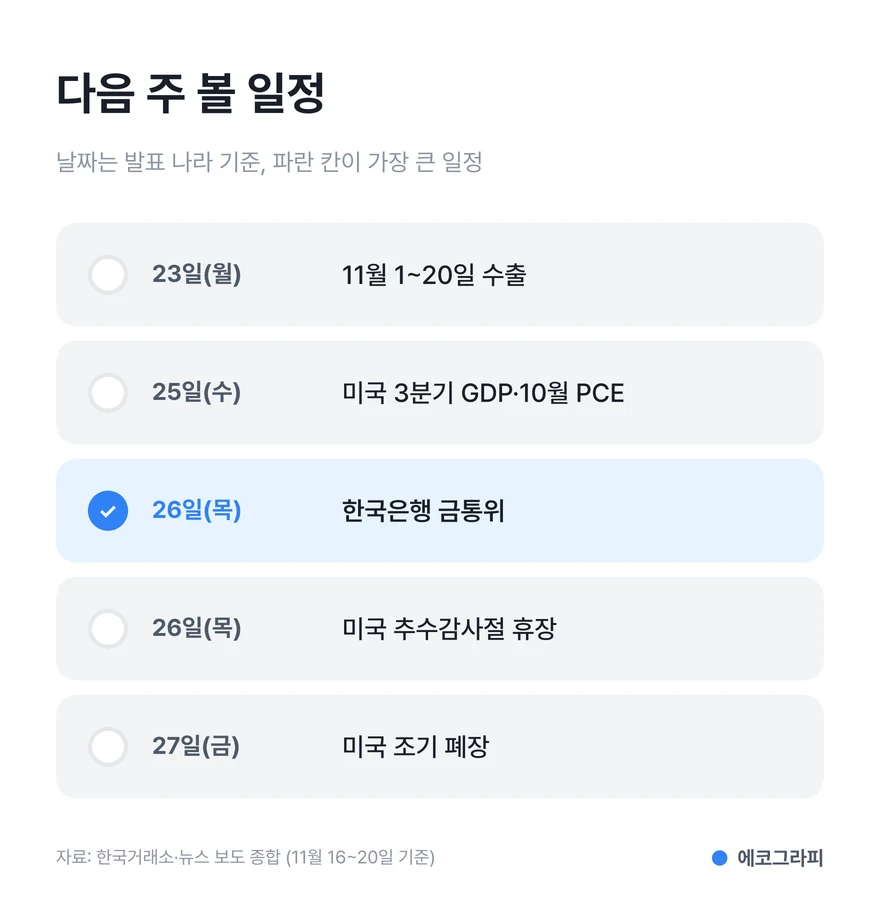

코스피는 한 주 전(13일) 5,290.53에서 420.57포인트 내린 4,869.96으로 마감했어요. 코스닥은 699.66에서 53.98포인트 내린 645.68이었어요. 미국도 나스닥이 한 주에 약 10% 내렸고, S&P500과 다우는 고점에서 10% 넘게 내려온 '조정 국면'에 들어섰다는 평가가 나왔어요. 세 지수 모두 2025년 4월 이후 가장 큰 주간 하락이었어요.

원·달러 환율은 한 주 내내 1,330원대에서 움직였어요. 금요일(20일) 서울 종가는 1,336.2원이었어요. 주가가 크게 빠진 것에 비하면 환율은 비교적 조용했던 편이에요.


20거래일 흐름으로 보면 10월 말 6,000선 근처까지 갔던 코스피는 반등할 때마다 고점이 조금씩 낮아졌고, 이번 주 금요일엔 4,800선까지 밀렸어요.
한 줄 정리: 이번 주는 'AI에 들어간 큰돈이 정말 돌아올까'라는 의심과 '금리가 더 오를 수 있다'는 걱정이 한꺼번에 나온 주였어요. 반도체 비중이 큰 한국 증시가 특히 크게 흔들렸어요.
레버리지 상품이 이런 주에 왜 훨씬 크게 움직이는지는 레버리지 ETF 글에, 증시 대기자금이 줄어드는 흐름은 오늘의 경제 용어 투자자예탁금에 정리했어요.
코스피에서 한 주 동안 외국인은 4조 5,583억 원, 기관은 4,724억 원을 순매도했어요. 개인은 2조 6,575억 원을 순매수했어요. 코스닥에서도 외국인은 7,216억 원을 팔았고, 개인(6,357억 원)과 기관(1,227억 원)이 샀어요.

주말에 해볼 것: 이번 주처럼 크게 흔들린 뒤에는 내 계좌의 종목별 비중과 빌린 돈(신용·미수)이 있는지 한 번 확인해 보세요. 빌린 돈이 있으면 주가가 더 내릴 때 원하지 않는 매도(반대매매)가 생길 수 있어요.
월요일엔 이달 1~20일 수출 숫자가 나와요. 반도체 수출이 여전히 좋은지가 관심이에요. 25일(현지)엔 미국 3분기 GDP와 연준이 중요하게 보는 물가 지표인 10월 PCE가 함께 나와요. 26일엔 한국은행 금융통화위원회가 열려요. 보도에 따르면 시장은 기준금리를 연 3.00%에서 3.25%로 올릴 가능성을 보고 있어요. 같은 날 미국 증시는 추수감사절로 쉬고, 27일엔 일찍 문을 닫아요. 이번 주 공모주 일정은 내일(23일) 아침 글에서 정리할게요. 공모주가 처음이라면 공모주 청약 기초 글부터 보세요.

지난주 금요일(13일) 종가와 이번 주 금요일(20일) 종가를 비교해요. 코스피는 5,290.53에서 4,869.96으로 내려 7.95% 하락이에요.
외국인은 주식을 판 원화를 달러로 바꿔 나가는 경우가 많아요. 달러를 사려는 수요가 늘면 원·달러 환율이 오르기 쉬워요.
예금 금리가 오르고 대출 이자 부담이 커져서, 주식으로 가던 돈이 줄어들 수 있어요. 다만 이미 예상된 인상이면 실제 발표 때 영향이 작을 수도 있어요.
둘 다 물가 지표예요. PCE는 연준이 목표를 정할 때 주로 보는 지표라 금리 전망에 더 직접적으로 영향을 줘요.
※ 2026년 11월 기준으로 정리한 글입니다. 세율·제도는 바뀔 수 있으니 거래 전 증권사·국세청 안내를 한 번 더 확인하세요. 특정 종목·상품의 매수·매도 권유가 아닙니다.